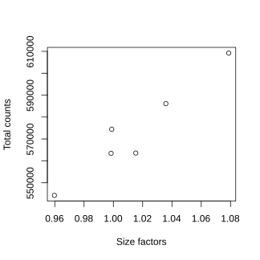
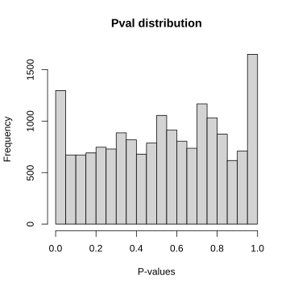
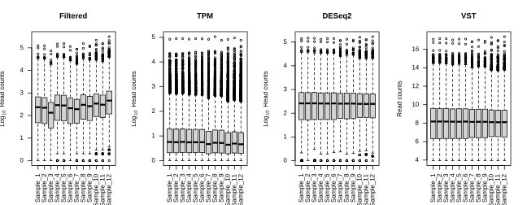

Differential Gene Expression
Workshop on RNA-Seq
Create a directory named data in your current working directory for input and output files.
Load R packages and source the download function.
library(dplyr) # data wrangling
library(ggplot2) # plotting
library(DESeq2) # rna-seq
library(edgeR) # rna-seq
# source download function
source("https://raw.githubusercontent.com/NBISweden/workshop-RNAseq/master/assets/scripts.R")1 Preparation
For differential gene expression, we use the DESeq2 package. We use the raw filtered counts and metadata.
download_data("data/gene_counts.csv")
cf <- as.matrix( read.csv("data/gene_counts.csv",header=TRUE,stringsAsFactors=FALSE,row.names=1) )
download_data("data/metadata_raw.csv")
mr <- read.csv("data/metadata_raw.csv",header=TRUE,stringsAsFactors=F,row.names=1)The data is converted to a DESeq2 object. The GLM model we use is simple since we only have one variable of interest ~Group.
If we had other covariates to control for, we would add them to the model like so ~var+Group. The variable of interest appears in the end. This model asks to find differentially expressed genes between groups under ‘Group’ variable while controlling for the effect of ‘var’. Similarily, batch effects can be controlled by specifying them in the model ~batch+Group.
library(DESeq2)
mr$Group <- factor(mr$Group)
d <- DESeqDataSetFromMatrix(countData=cf,colData=mr,design=~Group)2 Size factors
The first step is estimating size factors. The data is normalised for sequencing depth and compositional bias as done for the VST step. DESeq2 uses a method called median-of-ratios for this step.
d <- DESeq2::estimateSizeFactors(d,type="ratio")Optional
For those interested in the details of the median-of-ratios method, click below.
This is a step-by-step guide to computing normalisation factors (size factors) using the median-of-ratios method.
- The geometric mean is computed across all samples for each gene.
gm_mean = function(x, na.rm=TRUE){
exp(sum(log(x[x > 0]), na.rm=na.rm) / length(x))
}
gmean <- apply(cf,1,gm_mean)
head(gmean)## 0610005C13Rik 0610009B22Rik 0610010F05Rik 0610012G03Rik 0610030E20Rik
## 15.042785 10.231037 7.533377 39.842865 18.127854
## 0610039K10Rik
## 18.126473- Read counts for each gene is divided by the geometric mean of that gene to create a ratio.
ratio <- cf/gmean
head(ratio)[,1:5]## DSSd00_1 DSSd00_2 DSSd00_3 DSSd07_1 DSSd07_2
## 0610005C13Rik 1.8613574 2.1937427 1.2630640 0.7312476 0.3988623
## 0610009B22Rik 0.7819344 0.7819344 0.9774180 0.7819344 1.5638688
## 0610010F05Rik 0.9291982 1.0619408 0.3982278 2.1238815 0.5309704
## 0610012G03Rik 1.5059158 1.1545355 1.0541411 0.8784509 0.8533523
## 0610030E20Rik 0.8826196 0.8826196 1.3239295 1.0481108 0.8826196
## 0610039K10Rik 0.9930228 1.2688624 1.5447021 0.5516793 0.9378548- The median ratio for each sample (across all genes) is taken as the size factor for that sample.
sf <- apply(ratio,2,median)
sf## DSSd00_1 DSSd00_2 DSSd00_3 DSSd07_1 DSSd07_2 DSSd07_3
## 1.0136617 0.9572010 0.9962064 1.0358322 1.0788783 1.0023480We can verify that these values are correct by comparing with size factors generated by DESeq2.
# deseq2 size factors
sizeFactors(d)## DSSd00_1 DSSd00_2 DSSd00_3 DSSd07_1 DSSd07_2 DSSd07_3
## 1.0136617 0.9570561 0.9965245 1.0354178 1.0780855 1.0017753If we plot the size factors for each sample against the total counts for each sample, we get the plot below. We can see that they correlate very well. Size factors are mostly correcting for total counts, ie; sequencing depth.
plot(sizeFactors(d),colSums(cf),xlab="Size factors",ylab="Total counts")
The raw counts can then be divided by the size factor to yield normalised read counts.
# custom
head(t(t(cf)/sf))[,1:5]
# deseq2
head(counts(d,normalized=TRUE))[,1:5]## DSSd00_1 DSSd00_2 DSSd00_3 DSSd07_1 DSSd07_2
## 0610005C13Rik 27.622628 34.475518 19.072354 10.619481 5.561331
## 0610009B22Rik 7.892179 8.357701 10.038081 7.723259 14.830217
## 0610010F05Rik 6.905657 8.357701 3.011424 15.446517 3.707554
## 0610012G03Rik 59.191345 48.056783 42.159940 33.789257 31.514211
## 0610030E20Rik 15.784359 16.715403 24.091394 18.342739 14.830217
## 0610039K10Rik 17.757403 24.028392 28.106627 9.654073 15.757106
## DSSd00_1 DSSd00_2 DSSd00_3 DSSd07_1 DSSd07_2
## 0610005C13Rik 27.622628 34.480739 19.066265 10.623731 5.565421
## 0610009B22Rik 7.892179 8.358967 10.034877 7.726350 14.841124
## 0610010F05Rik 6.905657 8.358967 3.010463 15.452700 3.710281
## 0610012G03Rik 59.191345 48.064061 42.146481 33.802780 31.537388
## 0610030E20Rik 15.784359 16.717934 24.083704 18.350081 14.841124
## 0610039K10Rik 17.757403 24.032030 28.097654 9.657937 15.768694 The function estimateSizeFactors() has options to set a custom locfunc other than the median. Why is this useful? What happens if you change it to “shorth”. Check out the help page for estimateSizeFactors().
3 Gene dispersion
When it comes to comparing values between groups, some measure of variation is needed to estimate the variability in gene counts within groups. The most common measures of variation such as variance and standard deviation are not a good measure for rnaseq data because these measures correlate with the mean. For negative bionomially distributed data, dispersion is a better measure of variation in the data set.
Optional
For some more clarification on dispersion, click below.
We can create a mean counts vs variance plot for all genes in our data set.
dm <- apply(cf,1,mean)
dv <- apply(cf,1,var)
ggplot(data.frame(mean=log10(dm+1),var=log10(dv+1)),
aes(mean,var))+
geom_point(alpha=0.2)+
geom_smooth(method="lm")+
labs(x=expression('Log'[10]~'Mean counts'),y=expression('Log'[10]~'Variance'))+
theme_bw()
We see a mostly linear relationship on the log scale. The blue line denotes a linear fit. Genes that have larger read counts show higher variance. It’s hard to say which genes are more variable based on this alone. Therefore, variance is not a good measure to identify variation in read counts. A measure that controls for this mean-variance relationship is what we need.
One option is the coefficient of variation (CV). Let’s compute the CV for each gene and plot CV vs the mean.
cva <- function(x) sd(x)/mean(x)
dc <- apply(cf,1,cva)
ggplot(data.frame(mean=log10(dm+1),var=dc),
aes(mean,var))+
geom_point(alpha=0.2)+
geom_smooth()+
labs(x=expression('Log'[10]~'Mean counts'),y="Coefficient of variation")+
theme_bw()
Now, we see that genes with lower counts have higher variability and genes with larger counts have lower variability. A measure like CV is taking the ratio of ‘variation’ to mean. cv=sd(x)/mean(x).
This becomes even more apparent if we compute the CV and mean over replicates within sample groups (Time).
dx1 <- data.frame(day00=apply(cf[,1:3],1,cva),day07=apply(cf[,4:6],1,cva))
dx1$gene <- rownames(dx1)
dx1 <- tidyr::gather(dx1,key=sample,value=cv,-gene)
rownames(dx1) <- paste0(dx1$gene,"-",dx1$sample)
dx2 <- data.frame(day00=apply(cf[,1:3],1,mean),day07=apply(cf[,4:6],1,mean))
dx2$gene <- rownames(dx2)
dx2 <- tidyr::gather(dx2,key=sample,value=mean,-gene)
rownames(dx2) <- paste0(dx2$gene,"-",dx2$sample)
dx3 <- merge(dx1,dx2,by=0)
ggplot(dx3,aes(x=log10(mean+1),y=cv))+
geom_point(alpha=0.2)+
geom_smooth()+
facet_wrap(~sample.x)+
labs(x=expression('Log'[10]~'Mean counts'),y="Coefficient of variation")+
theme_bw()
We find that CV strongly declines with increasing counts. Genes with low counts show higher variability. For the sake of completeness, we can also plot the relationship between CV and variance for the same sample groups.
dx1 <- data.frame(day00=apply(cf[,1:3],1,cva),day07=apply(cf[,4:6],1,cva))
dx1$gene <- rownames(dx1)
dx1 <- tidyr::gather(dx1,key=sample,value=cv,-gene)
rownames(dx1) <- paste0(dx1$gene,"-",dx1$sample)
dx2 <- data.frame(day00=apply(cf[,1:3],1,var),day07=apply(cf[,4:6],1,var))
dx2$gene <- rownames(dx2)
dx2 <- tidyr::gather(dx2,key=sample,value=var,-gene)
rownames(dx2) <- paste0(dx2$gene,"-",dx2$sample)
dx3 <- merge(dx1,dx2,by=0)
ggplot(dx3,aes(x=log10(var+1),y=cv))+
geom_point(alpha=0.2)+
geom_smooth()+
facet_wrap(~sample.x)+
labs(x=expression('Log'[10]~'Variance'),y="Coefficient of variation")+
theme_bw()And we see that they have a weak relationship.
DESeq2 computes it’s own version of dispersion in a more robust manner taking into account low count values. The DESeq2 dispersion estimates are inversely related to the mean and directly related to variance. The dispersion estimate is a good measure of the variation in gene expression for a certain mean value.
Now, the variance or dispersion estimate for genes with low counts is unreliable when there are too few replicates. To overcome this, DESeq2 borrows information from other genes. DESeq2 assumes that genes with similar expression levels have similar dispersion values. Dispersion estimates are computed for each gene separately using maximum likelihood estimate. A curve is fitted to these gene-wise dispersion estimates. The gene-wise estimates are then ‘shrunk’ to the fitted curve.
Gene-wide dispersions, fitted curve and shrinkage can be visualised using the plotDispEsts() function.
d <- DESeq2::estimateDispersions(d)
plotDispEsts(d)
The black points denote the maximum likelihood dispersion estimate for each gene. The red curve denote the fitted curve. The blue points denote the new gene dispersion estimates after shrunk towards the curve. The circled blue points denote estimates that are not shrunk as they are too far away from the curve. Thus, shrinkage method is important to reduce false positives in DGE analysis involving too few replicates.
It is a good idea to visually check the dispersion shrinkage plot to verify that the method works for your data set.
4 Testing
Overdispersion is the reason why RNA-Seq data is better modelled as negative-binomial distribution rather than poisson distribution. Poisson distribution has a mean = variance relationship, while negative-binomial distribution has a variance > mean relationship. The last step in the DESeq2 workflow is fitting the Negative Binomial model for each gene and performing differential expression testing. This is based on the log fold change values computed on the corrected count estimates between groups.
The log fold change is computed from the corrected count values as such:
FC = (corrected counts group B - corrected counts group A) / corrected counts group A
logFC = log2(FC)and the fold-change can be computed back from the log fold-change as such:
FC = 2^logFCThe most commonly used testing for comparing two groups in DESeq2 is the Walds’s test. The null hypothesis is that the groups are not different and logFC=0. The list of contrasts can be seen using resultsNames(). Then we can pick our comparisons of interest.
dg <- nbinomWaldTest(d)
resultsNames(dg)## [1] "Intercept" "Group_day07_vs_day00"And we can get the result tables for the three different comparisons. The summary of the result object shows the number of genes that are differentially expressed with positive or negative fold-change and outliers.
res <- results(dg,name="Group_day07_vs_day00",alpha=0.05)
res$padj[is.na(res$padj)] <- 1
# res <- na.omit(res)
summary(res)
write.csv(res,"data/dge_results.csv",row.names=T)##
## out of 10573 with nonzero total read count
## adjusted p-value < 0.05
## LFC > 0 (up) : 193, 1.8%
## LFC < 0 (down) : 238, 2.3%
## outliers [1] : 1, 0.0095%
## low counts [2] : 0, 0%
## (mean count < 21)
## [1] see 'cooksCutoff' argument of ?results
## [2] see 'independentFiltering' argument of ?resultsYou can also build up the comparison using contrasts. Contrasts need the condition, level to compare and the reference level (base level). For example, results(dg,contrast=c("Group","day07","day00"),alpha=0.05).
Note that day00 is the reference level and other levels are compared to this. Therefore, a fold-change of 2 would mean that, a gene is 2 fold higher expressed in day07 compared to day00.
The results() function has many useful arguments. One can set a threshold on the logFC values using lfcThreshold. By default, no filtering is performed based on logFC values. Outliers are detected and p-values are set to NA automatically using cooksCutoff. independentFiltering=TRUE remove genes with low counts.
head(res)## log2 fold change (MLE): Group day07 vs day00
## Wald test p-value: Group day07 vs day00
## DataFrame with 6 rows and 6 columns
## baseMean log2FoldChange lfcSE stat pvalue
## <numeric> <numeric> <numeric> <numeric> <numeric>
## 0610005C13Rik 17.89018 -1.636817 0.453131 -3.612238 0.000303565
## 0610009B22Rik 10.47145 0.476041 0.533719 0.891931 0.372429792
## 0610010F05Rik 9.06799 0.980018 0.634463 1.544641 0.122433185
## 0610012G03Rik 40.61511 -0.664240 0.288482 -2.302535 0.021305025
## 0610030E20Rik 18.12392 -0.119930 0.408101 -0.293873 0.768855145
## 0610039K10Rik 18.88030 -0.687546 0.412994 -1.664787 0.095955351
## padj
## <numeric>
## 0610005C13Rik 1.000000
## 0610009B22Rik 1.000000
## 0610010F05Rik 1.000000
## 0610012G03Rik 0.161632
## 0610030E20Rik 1.000000
## 0610039K10Rik 1.000000The result table contains mean expression value (baseMean), log2 fold change (log2FoldChange), log2 fold change standard error (lfcSE), wald test statistic (stat), wald test p-value (pvalue) and BH adjusted p-value (padj) for each gene.
Note that the results object is a DESeqResults class object and not a data.frame. It can be converted to a data.frame using as.data.frame() for exporting to a file.
It is a good idea to look at the distribution of unadjusted p-values.
hist(res$pvalue,main="Pval distribution",xlab="P-values")
This is the kind of distribution to be expected when the p-values are “well-behaved”. For more explanation on p-value distributions, see here. If this distribution is very different or strange, then it might indicate an underlying problem.
We can filter the results table as needed.
# all genes
nrow(as.data.frame(res))
# only genes with padj <0.05
nrow(dplyr::filter(as.data.frame(res),padj<0.05))
# only genes with padj <0.05 and an absolute fold change >2
nrow(dplyr::filter(as.data.frame(res),padj<0.05,abs(log2FoldChange)>2))## [1] 10573
## [1] 431
## [1] 23Note that manually filtering by log2FoldChange on the results table is not the same as setting the lfcThreshold argument in the results() function.
4.0.1 lfcShrink
This is an optional extra step to generate more accurate log2 fold changes. This step corrects the log2 fold changes for genes with high dispersion. This does not change the p-values or the list of DE genes.
lres <- lfcShrink(dg,coef="Group_day07_vs_day00",res=res,type="normal")
summary(lres)##
## out of 10573 with nonzero total read count
## adjusted p-value < 0.05
## LFC > 0 (up) : 193, 1.8%
## LFC < 0 (down) : 238, 2.3%
## outliers [1] : 1, 0.0095%
## low counts [2] : 0, 0%
## (mean count < 21)
## [1] see 'cooksCutoff' argument of ?results
## [2] see 'independentFiltering' argument of ?resultshead(lres)## log2 fold change (MAP): Group day07 vs day00
## Wald test p-value: Group day07 vs day00
## DataFrame with 6 rows and 6 columns
## baseMean log2FoldChange lfcSE stat pvalue
## <numeric> <numeric> <numeric> <numeric> <numeric>
## 0610005C13Rik 17.89018 -0.8690787 0.237072 -3.612238 0.000303565
## 0610009B22Rik 10.47145 0.2113177 0.236621 0.891931 0.372429792
## 0610010F05Rik 9.06799 0.3546594 0.229694 1.544641 0.122433185
## 0610012G03Rik 40.61511 -0.4861281 0.210665 -2.302535 0.021305025
## 0610030E20Rik 18.12392 -0.0691222 0.235235 -0.293873 0.768855145
## 0610039K10Rik 18.88030 -0.3928150 0.235449 -1.664787 0.095955351
## padj
## <numeric>
## 0610005C13Rik 1.000000
## 0610009B22Rik 1.000000
## 0610010F05Rik 1.000000
## 0610012G03Rik 0.161632
## 0610030E20Rik 1.000000
## 0610039K10Rik 1.000000We see that the number of genes up and down has not changed. But, we can see that the logFC distribution has changed in the density plot below.
par(mfrow=c(1,2))
plot(density(na.omit(res$log2FoldChange)),main="log2FC")
plot(density(na.omit(lres$log2FoldChange)),main="log2FC lfcShrink")
par(mfrow=c(1,1))
This step does not change the total number of DE genes. This may be useful in downstream steps where genes need to be filtered down based on fold change or if fold change values are used in functional analyses such as GSEA.
How many DE genes do you get?
5 Visualisation
In this section, we can explore some useful visualisation of the differential gene expression output.
5.1 MA plot
The MA plot shows mean expression vs log fold change for all genes. The plotMA() function from DESeq2 takes a results object as input. Differentially expressed genes are marked in bright colour.
DESeq2::plotMA(res)
How does this plot change if you set log fold change filtering to minimum value of 1. How does the plot change when you use lfcShrink()?
5.2 Volcano plot
A volcano plot is similar to the MA plot. It plots log fold change vs adjusted p-values.
ggplot()+
geom_point(data=as.data.frame(res),aes(x=log2FoldChange,y=-log10(padj)),col="grey80",alpha=0.5)+
geom_point(data=filter(as.data.frame(res),padj<0.05),aes(x=log2FoldChange,y=-log10(padj)),col="red",alpha=0.7)+
geom_hline(aes(yintercept=-log10(0.05)),alpha=0.5)+
theme_bw()X axis denotes log fold change and the y axis denotes -log10 adjusted p-value. The adjusted p-value is transformed so that the smallest p-values appears at the top. The horizontal grey line denotes the significance threshold line. All genes above this line (coloured red as well) are considered significant.
Why is the y-axis (p-value) on a -log scale?
5.3 Counts plot
It can be a good idea to manually verify some of these genes by plotting out it’s actual read count values. We can use the function plotCounts() to visualise the data points for a gene of interest. Below, we see the counts before and after normalisation.
plotCounts(d,gene=rownames(res)[1],intgroup="Group",normalized=F)
plotCounts(d,gene=rownames(res)[1],intgroup="Group",normalized=T)By looking at the count plots, do you agree that the top DE genes differ significantly between the groups compared? Does the fold change make sense given the reference group?